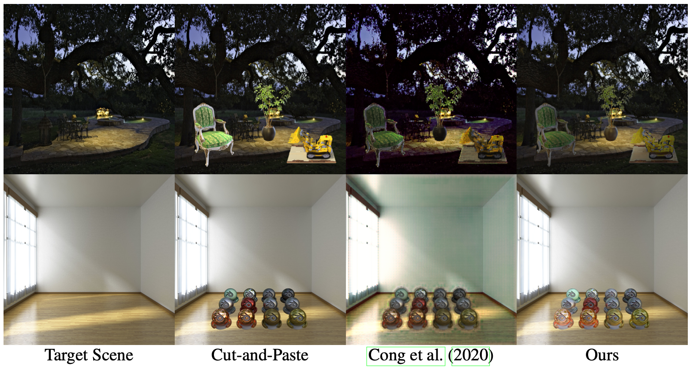
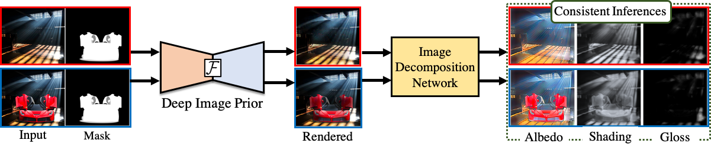
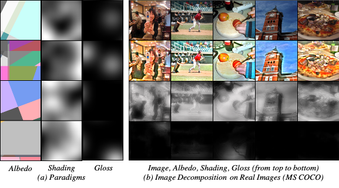
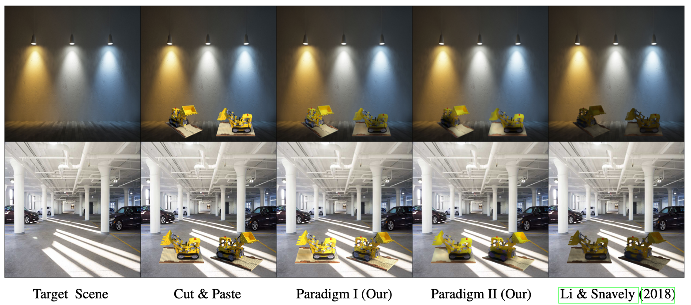
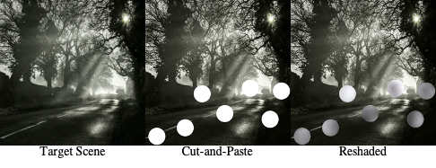
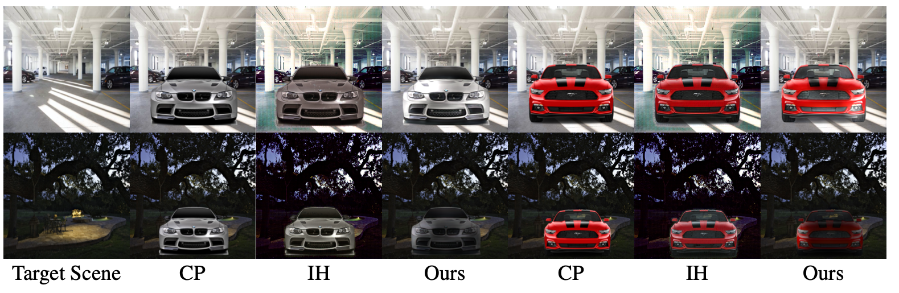

We generate realistic renderings of cut-and-paste images. Our method is entirely image-based and can convincingly reshade/relight fragments with complex surface properties (a lego dozer, a plant and a chair in the top row) and matte, glossy and specular fragments (a set of 16 different materials in the bottom row) added to a spatially varying illuminated target scene (indoor-outdoor and day-night) without requiring the geometry of the inserted fragment or the parameters of the target scene
Abstract: Cut-and-paste methods take an object from one image and insert it into another. Doing so often results in unrealistic looking images because the inserted object’s shading is inconsistent with the target scene’s shading. Existing reshading methods require a geometric and physical model of the inserted object, which is then rendered using environment parameters. Accurately constructing such a model only from a single image is beyond the current understanding of computer vision. We describe an alternative procedure – cut-and-paste neural rendering, to render the inserted fragment’s shading field consistent with the target scene.
We use a Deep Image Prior (DIP) as a neural renderer trained to render an image with consistent image decomposition inferences. The resulting rendering from DIP should have an albedo consistent with cut-and-paste albedo; it should have a shading field that, outside the inserted fragment, is the same as the target scene’s shading field; and cut-and-paste surface normals are consistent with the final rendering’s shading field. The result is a simple procedure that produces convincing and realistic shading. Moreover, our procedure does not require rendered images or image decomposition from real images or any form of labeled annotations in the training. In fact, our only use of simulated ground truth is our use of a pre-trained normal estimator. Qualitative results are strong, supported by a user study comparing against state-of-the-art (SOTA) image harmonization baseline.
Main Idea: Consistent Image Decomposition Inferences


Cut-and-Paste Neural Renderer. Given two images, a target scene (top row) and a new fragment added to this target scene (bottom row), our approach generates a plausible, realistic rendering of the composite image by correcting the fragment’s shading. Our method uses Deep ImagePrior (DIP) as a neural renderer trained to produce consistent image decomposition inferences. The resulting rendering from DIP should have an albedo same as the cut-and-paste albedo; it should have shading and gloss field that, outside the inserted fragment, is the same as the target scene’s shading and gloss field.
We train DIP with additional constraints so as to produce images that have consistent image decomposition inferential properties. The final reshaded image’s albedo must be like the cut-and-paste albedo; the reshaded image’s shading must match the shading of the target scene outside the fragment; and the shading of the reshaded image must have reasonable spherical harmonic properties and meet a consistency test everywhere. We use pretrained surface normals to meet these spherical harmonic properties and consistency tests and one should think of a surface normal as a latent variable that explains shading similarities in images. Details of these shading consistencies are available in our paper.
Does it matter the type of image decomposition inferences that we use?
Short Answer: Yes!
We find accurate albedo recovery (measured by strong WHDR performance) results in poor reshading outcomes. We show that improvements in WHDR do not result in improvements in reshading from DIP. Instead of relying on existing image decomposition methods, therefore we built an image decomposition around approximate statistical models of albedo, shading and gloss (paradigms) to train our image decomposition network without requiring real image ground truth decompositions. Our method has reasonable, but not SOTA, WHDR; but has realistic and convincing reshading.
Paradigms: Our albedo, shading and gloss paradigms are a simple extension of the Retinex model. Albedo paradigms (A) are Mondrian images. Shading paradigms (S) are Perlin noise and gloss paradigms (G) comprise light bars on a dark background. These are used to produce fake images by a simple composition (AS + G) that in turn are used to train the image decomposition network. The following figure shows some samples from each. The figure also illustrates, the resulting intrinsic image models are satisfactory on MSCOCO real images.


Image Decomposition. Left: samples drawn from our paradigms that are used to train our image decomposition network. Right: examples showing MS COCO image decompositions after training on paradigms.
What properties image decompositions must satisfy for convincing reshading?
To answer this question, we trained two models (Paradigm I and Paradigm II); samples drawn from different statistical models. The difference between the two is that Paradigm I has high-frequency, fine-grained details in albedo and not shading, and for Paradigm II it is the opposite. Our findings are discussed below in the following figure.


Better WHDR does not mean better reshading. Paradigm I achieves (relatively weak) WHDR of 22%; Paradigm II achieves 19%, close to state-of-the-art (SOTA) for an image decomposition network that does not see rendered images (Liu et al., 2020). However, Paradigm II produces significantly worse reshading results. Furthermore, reshading using CGIntrinsics (Li & Snavely, 2018) (a supervised SOTA method) is also qualitatively worse than using Paradigm I. This reflects that better recovery of albedo, as measured by WHDR, does not produce better reshading. The key issue is that methods that get low WHDR do so by suppressing small spatial details in the albedo field (for example, the surface detail on the lego), but the normal inference method cannot recover these details, and so they do not appear in the reshaded image. From the perspective of reshading, it is better to model them as fine detail in albedo than in shading.
Does our method has any 3D understanding of the scene?
Our method has some implicit notion of the 3D layout of the scene, which is required to choose the appropriate shading. Our method shades the white discs as spheres (implying it "knows" about shape). The reshading also makes it look as if those spheres are placed at the appropriate depth.


How well we do for objects with complex reflective properties?
Glossy effects in car paint make reshading cars a particularly challenging case with their complex reflective properties. Our method successfully reshades cars without a distinct shift in object and background color produced by image harmonization baseline (IH).


Drawbacks of our method
Need For Speed. A desirable cut-and-paste reshading application would correct shading on inserted objects requiring no explicit 3D reasoning about either fragment or scene. It would do so in ways that produce consistent inferences of image analysis. Finally, it would be quick. We described a method that meets two of these three desiderata (our DIP renderer still requires minutes to render an image).
Background Shadows. Our renderer can adjust the background with cast-shadows but often unrealistically. Therefore, we only show shading corrections on the fragment in this paper. Having better inferences (for eg., normal prediction network) should improve our results significantly. Also, adding GAN based losses may help in correcting background shadows.